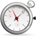

<div class="panel text-center">
    
    <h2>
        <label >{{hours | number : '2.0'}} : {{minutes | number : '2.0'}} : {{seconds | number : '2.0'}}: {{miliseconds | number : '2.0'}}</label>
    </h2>
    
    <button (click) = 'startPause()' class='{{btnStartClass}}'>{{btnStart}}</button>
    <button (click)="resetLap()" class="btn btn-info">{{btnResetLap}}</button>

    <table *ngIf="lstLap.length > 0" class="table">
    <thead>
        <tr>
        <th>#</th>
        <th>Comment</th>
        <th>Time</th>
        </tr>
    </thead>
    <tbody>
        <tr *ngFor = "let lap of lstLap">
            <td class="text-left">{{lap.position}}</td>
            <td><input type="text" class="form-control" value="{{lap.data}}"/></td>
            <td class="text-left">{{lap.time}}</td>
        </tr>
    </tbody>
    </table>
</div>

